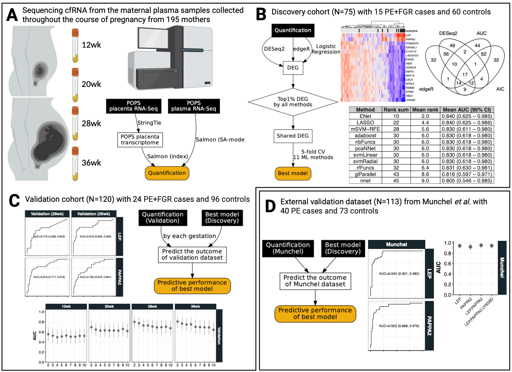

8 Main Figures
This chapter demonstrates the R and the dot codes that make the main figures shown in the paper. Making the supplementary text figures are shown in Chapter 9.
8.1 Figure 1

Figure 1 was made using the Biorender, except some inlet figures (shown further below, e.g. Section 8.2, Section 8.3, Section 8.4, Section 8.5) made by R, and workflow diagrams (e.g. Figure 8.2, Figure 8.3, Figure 8.4, Figure 8.5) written in DOT (Graphic Description Language) such as Graphviz, where you can see some example codes shown below.
8.1.1 The dot code in Figure 1A
static/dot/cfRNA_quant_workflow2.quant.gv
digraph G {
node [fontname = "Handlee", color=black, fontcolor=black];
edge [fontname = "Handlee", color=black, fontcolor=black];
placenta_rna[
label = "POPS\nplacenta RNA-Seq";
shape = rect;
style = filled;
fontcolor = white;
];
plasma_rna [
label = "POPS\nplasma RNA-Seq";
shape = rect;
style = filled;
fontcolor = white;
];
pops[
label = "POPS placenta\ntranscriptome";
shape = rect;
color = black;
fontcolor = black;
];
quant_pops [
label = "Quantification";
style = "rounded,filled";
fillcolor = "darkgoldenrod2"
shape = rect;
color = black;
];
placenta_rna-> pops[label="StringTie"];
pops-> quant_pops[label="Salmon (index)"];
plasma_rna -> quant_pops[label="Salmon (SA-mode)"]
{rank=same; placenta_rna plasma_rna}
}8.1.2 The dot code in Figure 1B
static/dot/cfRNA_quant_workflow2.discovery.gv
digraph G {
/*rankdir=LR; */
node [fontname = "Handlee", color=black, fontcolor=black];
edge [fontname = "Handlee", color=black, fontcolor=black];
quant_pops [
label = "Quantification";
shape = rect;
style = filled;
fontcolor = white;
];
deg_pops [
label = "DEG";
shape = rect;
];
core_deg[
label = "Shared DEG";
shape = rect;
];
best_model [
label = "Best model";
style = "rounded,filled";
fillcolor = "darkgoldenrod2"
shape = rect;
color = black;
];
check_top1[
label = "Top1% DEG\nby all methods";
shape = diamond;
];
quant_pops-> deg_pops[label="DESeq2"];
quant_pops-> deg_pops[label="edgeR"];
quant_pops-> deg_pops[label="Logistic\nRegression"];
deg_pops-> check_top1;
check_top1-> core_deg;
core_deg-> best_model [label="5-fold CV\n11 ML methods"];
/*
{rank=same; check_top1 core_deg}
{rank=same; best_model deg_pops}
*/
}8.1.3 The dot code in Figure 1C
static/dot/cfRNA_quant_workflow2.validation.gv
digraph G {
/*rankdir=LR; */
node [fontname = "Handlee", color=black, fontcolor=black];
edge [fontname = "Handlee", color=black, fontcolor=black];
quant_pops [
label = "Quantification\n(Validation)";
shape = rect;
style = filled;
fontcolor = white;
];
best_model [
label = "Best model\n(Discovery)";
shape = rect;
style = filled;
fontcolor = white;
];
predict [
label = "Predict the outcome\nof validation dataset";
shape = rect;
];
score [
label = "Predictive performance\nof best model";
style = "rounded,filled";
fillcolor = "darkgoldenrod2"
shape = rect;
color = black;
];
quant_pops -> predict [label="by each gestation"];
best_model -> predict;
predict -> score;
/* {rank=same; predict best_model} */
}8.1.4 The dot code in Figure 1D
static/dot/cfRNA_quant_workflow2.munchel.gv
digraph G {
/*rankdir=LR; */
node [fontname = "Handlee", color=black, fontcolor=black];
edge [fontname = "Handlee", color=black, fontcolor=black];
quant_munchel [
label = "Quantification\n(Munchel)";
shape = rect;
style = filled;
fontcolor = white;
];
best_model [
label = "Best model\n(Discovery)";
shape = rect;
style = filled;
fontcolor = white;
];
predict [
label = "Predict the outcome\nof Munchel dataset";
shape = rect;
];
score [
label = "Predictive performance\nof best model";
style = "rounded,filled";
fillcolor = "darkgoldenrod2"
shape = rect;
color = black;
];
quant_munchel -> predict
best_model -> predict;
predict -> score;
/* {rank=same; predict best_model} */
}8.2 Figure 2
8.2.1 Figure 2A
R code to generate a histogram of p-values using ggplot
# cfRNA.preterm.PE.modelling.logitZ.POPS-2022.GRCh38.88.Rmd fig2B. histogram of
# p-values from univariable logistic regression using the 28wk discovery
load("RData/dl.logregZ.preterm.POPS-2022.GRCh38.88.RData")
sapply(dl.logregZ, function(DT) DT[padj.BH < 0.05] %>%
nrow)
# ks.test(dl.logregZ[['28wk']]$pval,'punif',0,1) #,exact=T)
p2.hist <- ggplot(dl.logregZ[["28wk"]], aes(pval)) + geom_histogram(aes(y = ..density..),
alpha = 0.8, bins = 40) + #geom_density(alpha=.5) + alpha = 0.8, bins = 40)
alpha = 0.8, bins = 40) + #geom_density(alpha=.5) + +
alpha = 0.8, bins = 40) + #geom_density(alpha=.5) + #geom_density(alpha=.5)
alpha = 0.8, bins = 40) + #geom_density(alpha=.5) + +
xlab("P-value") + ylab("Density") + annotate("text", x = 0.48, y = 10, label = "P-value < 2.2e-16",
size = 6) + theme_Publication()
print(p2.hist)8.2.2 Figure 2B
Code
load("RData/dl.res.edgeR.preterm.POPS-2022.GRCh38.88.RData") # edgeR result
dl.res.edgeR[["28wk"]]
## cfRNA.preterm.PE.modelling.DEG.POPS-2022.GRCh38.88.Rmd
## fig1A. Volcano (28wk) - edgeR (using original p-values)
res.edger<-dl.res.edgeR[["28wk"]]
(dt.label<-
rbind(
res.edger[order(BH)][BH<0.05,.SD[c(1:6)]],
res.edger[order(-abs(logFC))][,.SD[c(1:2)]]
) %>% unique)
p2.vol<-ggplot(res.edger, aes(logFC, -log10(PValue))) +
geom_point(data=res.edger[BH>0.05],size=2, col="grey90", alpha=.6) +
geom_point(data=res.edger[BH<=0.05], size=2,col="grey20",alpha=.8) +
ylab("-log10(P-value)") + xlab("log2(Fold change)") +
ggrepel::geom_text_repel(
data=res.edger[order(BH)][BH<0.05,.SD[c(1:6)]] # dt.label
,aes(label=gene_id),
box.padding = 0.6, max.overlaps = Inf,
#direction='gy',
#nudge_y=1,
size=5) +
theme_Publication()
print(p2.vol)8.2.3 Figure 2C
Code
# cfRNA.preterm.PE.modelling.logitZ.POPS-2022.GRCh38.88.Rmd
load("RData/dl.resLFC.preterm.POPS-2022.GRCh38.88.RData")
venn.top1pctZ<-list(
`edgeR`=dl.res.edgeR[["28wk"]][order(PValue)][1:151]$gene_id,
`DESeq2`=dl.resLFC[["28wk"]][order(pvalue)][1:151]$gene_id,
`AUC`=dl.logregZ[["28wk"]][order(-auc)][1:151]$gene_id,
`AIC`=dl.logregZ[["28wk"]][order(AIC)][1:151]$gene_id
)
p2.venn<-ggvenn::ggvenn(venn.top1pctZ,fill_color=rep("grey100",length(venn.top1pctZ)),set_name_size=5.6,text_size=6,stroke_size=.7,show_percentage=FALSE)
print(p2.venn)
dt.venn.top1pctZ<-lapply(names(venn.top1pctZ), function(i) data.table(i,venn.top1pctZ[[i]])) %>% rbindlist %>% dcast.data.table(V2~i, fun=length)
setnames(dt.venn.top1pctZ,"V2","Gene")
top1pct.genesZ<-dt.venn.top1pctZ[AIC==1 & AUC==1 & DESeq2==1 & edgeR==1]$Gene8.2.4 Figure 2D
Code
## Heatmap of the 17 shared genes
# cfRNA.preterm.PE.modelling.WF2.POPS-2022.GRCh38.88.Rmd
load("RData/dt.cpmZ.preterm.POPS-2022.GRCh38.88.RData")
#top1pct.genesZ # the 17 shared DEGs
this.mat<-dt.cpmZ[GA=="28wk" & geneName %in% top1pct.genesZ,.(SampleID,geneName,logCPMZ,y=ifelse(Condition=="Case",1,0))] %>% dcast.data.table(SampleID+y~geneName,value.var="logCPMZ") %>% as.matrix(rownames="SampleID") # %>% as.data.frame
#pheatmap::pheatmap(t(this.mat[,top1pct.genesZ]))
p.anno<-HeatmapAnnotation(outcome=ifelse(this.mat[,"y"]==1,"case","control"),
which="column",
col=list(outcome=c(`case`="grey10",`control`="grey90"))
)
p.main<-ComplexHeatmap::Heatmap(t(this.mat[,top1pct.genesZ]),
name='z-score',
row_names_gp=gpar(fontsize=10),
show_column_names =F,
#col=circlize::colorRamp2(c(min(this.mat,na.rm=T), 0, max(this.mat,na.rm=T)), c("blue", "white", "red")),
top_annotation=p.anno
)
p2.heat = grid.grabExpr(ComplexHeatmap::draw(p.main,merge_legend=T))
print(p2.heat)8.2.5 Figure 2A-D
8.3 Figure 3
8.3.1 Figure 3A
Code
load("RData/dl.kcv.result.core17.RData")
#########################################################
# Reulst of 11 ML methods based on 5-fold CV with 5 rep #
#########################################################
(dt.foo<-lapply(dl.kcv.result, function(DT) DT[,.(.N,
mean_AUC_test=mean(AUC_test), mean_AUC_test_lo=mean(AUC_test_lo), mean_AUC_test_hi=mean(AUC_test_hi)
),method][,Rank:=frank(-mean_AUC_test)][order(Rank)]
) %>% rbindlist )
(dt.bar<-dt.foo[,.(.N,N_test=sum(N),rankSum=sum(Rank),meanRank=sum(Rank)/5, #F2-F6
meanAUC=mean(mean_AUC_test)/100,
meanAUC_lo=mean(mean_AUC_test_lo)/100,
meanAUC_hi=mean(mean_AUC_test_hi)/100)
,method][order(rankSum)])
dt.bar[,.(`Method`=method,`Rank Sum`=rankSum,`Mean Rank`=meanRank,`Mean AUC`=meanAUC,`AUC Range`="")] %>%
kbl(booktabs=F, digits=4) %>%
kable_styling(latex_options = c("basic"),full_width=F,font_size=10) %>%
#kable_styling(bootstrap_options = c("condensed"), full_width = F, font_size=10) %>%
column_spec(5, image = spec_pointrange(
x = dt.bar$meanAUC,
xmin = dt.bar$meanAUC_lo,
xmax = dt.bar$meanAUC_hi,
cex= 0.6,
vline = .80,
height=50)
) %>% save_kable("Figures/cfRNA.Fig2.KCV.table.pdf")
##
##
(dt.foo<-lapply(names(dl.kcv.result), function(NF)
dl.kcv.result[[NF]][,.(NF=substr(NF,2,3),.N,
mean_AUC=mean(AUC_test)/100, mean_AUC_lo=mean(AUC_test_lo)/100, mean_AUC_hi=mean(AUC_test_hi)/100
),method][,Rank:=frank(-mean_AUC)][order(Rank)]
) %>% rbindlist )
dt.bar[,.(Method=method,`Rank sum`=rankSum, `Mean rank`=meanRank,round(meanAUC,3),round(meanAUC_lo,3),round(meanAUC_hi,3))][,.(Method,paste(V4,"(",V5,"-",V6,")"))]
(dt.baz<-dt.bar[,.(Method=method,`Rank sum`=rankSum, `Mean rank`=meanRank,`Mean AUC (95% CI)`=paste0(sprintf("%.3f",meanAUC)," (",round(meanAUC_lo,3)," - ",round(meanAUC_hi,3),")"))])
library(ggpmisc)
p.kcv<-ggplot(dt.foo, aes(method, mean_AUC)) +
geom_pointrange(aes(col=NF, ymin=mean_AUC_lo, ymax=mean_AUC_hi),position=position_dodge(width=0.7), size=.9,alpha=.8) +
scale_x_discrete(limits=dt.bar$method) +
scale_y_continuous(expand=c(0,0),breaks=c(0,.2,.4,.6,.8,1), limit=c(0,1.05)) +
ggsci::scale_color_jco(name="Number of cfRNA in the training model") +
labs(x="ML Method",y="The mean AUC \nacross 5-fold CV with 5 repetitions") +
geom_table(data=data.table(x="LASSO", y=0.03, tb=list(dt.baz)),aes(x=x,y=y, label=tb), size=5, table.theme = ttheme_gtlight ) +
theme_Publication() +
theme(legend.position="top",
legend.key = element_rect(fill = "transparent"),
legend.background = element_rect(fill='transparent', linetype="solid",color="black",size=.2),
legend.box.background = element_rect(fill='transparent'),
axis.text.x = element_text(angle = 45, hjust=1, size=rel(1)))8.3.2 Figure 3B
Code
load("RData/dl.final.result.core17.RData")
load("RData/dl.enet.result.core17.RData")
load("RData/dt.best.result.core17.RData") # dt.best.result
library(ggbreak)
###############################################
# The final training models from LASSO & ENet #
###############################################
(dt.enet.tr<-lapply(names(dl.final.result), function(FN){
dl.final.result[[FN]][grepl("ENet",methods) & fold=="28wk(preterm)",.(Method="ENet",FN=FN,predictor,AUC=AUC_test/100,AUC_lo=AUC_test_lo/100,AUC_hi=AUC_test_hi/100,LPOCV=LPOCV_test/100,LPOCV_lo=LPOCV_test_lo/100,LPOCV_hi=LPOCV_test_hi/100)]
}) %>% rbindlist)
(dt.lasso.tr<-lapply(names(dl.final.result), function(FN){
dl.final.result[[FN]][grepl("LASSO",methods) & fold=="28wk(preterm)",.(Method="LASSO",FN=FN,predictor,AUC=AUC_test/100,AUC_lo=AUC_test_lo/100,AUC_hi=AUC_test_hi/100,LPOCV=LPOCV_test/100,LPOCV_lo=LPOCV_test_lo/100,LPOCV_hi=LPOCV_test_hi/100)]
}) %>% rbindlist)
dt.final.tr<-rbind(dt.enet.tr, dt.lasso.tr)
dt.final.tr[,.(Method,`Selected features`=predictor,AUC,`AUC Range`="",LPOCV,`LPOCV Range`="")]
##################################
## Train for ENet and LASSO only #
##################################
lapply(names(dl.enet.result), function(FN)
dl.enet.result[[FN]][grepl("ENet",methods) & fold=="28wk(preterm)",-c("fold")][,`:=`(Method="ENet",`N`=substr(FN,2,nchar(FN)) %>% as.integer)]
) %>% rbindlist
lapply(names(dl.enet.result), function(FN)
dl.enet.result[[FN]][grepl("LASSO",methods) & fold=="28wk(preterm)",-c("fold")][,`:=`(Method="LASSO",`N`=substr(FN,2,nchar(FN)) %>% as.integer)]
) %>% rbindlist
dt.enet.lasso.tr<-lapply(names(dl.enet.result), function(FN){
dt.foo<-dl.enet.result[[FN]][grepl("ENet",methods) & fold=="28wk(preterm)",-c("fold")][,`:=`(Method="ENet",`N`=substr(FN,2,nchar(FN)) %>% as.integer)]
dt.bar<-dl.enet.result[[FN]][grepl("LASSO",methods) & fold=="28wk(preterm)",-c("fold")][,`:=`(Method="LASSO",`N`=substr(FN,2,nchar(FN))%>% as.integer)]
rbind(
dt.foo[,.(Method,N,predictor,Measure="AUC",Score=AUC_test/100,Lo=AUC_test_lo/100,Hi=AUC_test_hi/100)],
dt.foo[,.(Method,N,predictor,Measure="LPOCV-AUC",Score=LPOCV_test/100,Lo=LPOCV_test/100,Hi=LPOCV_test/100)],
#dt.foo[,.(Method,N,predictor,Measure="LPOCV-AUC",Score=LPOCV_test/100,Lo=LPOCV_test_lo/100,Hi=LPOCV_test_hi/100)],
dt.foo[,.(Method,N,predictor,Measure="BIC",Score=BIC,Lo=BIC,Hi=BIC)],
dt.foo[,.(Method,N,predictor,Measure="AIC",Score=AIC,Lo=AIC,Hi=AIC)],
dt.bar[,.(Method,N,predictor,Measure="AUC",Score=AUC_test/100,Lo=AUC_test_lo/100,Hi=AUC_test_hi/100)],
dt.bar[,.(Method,N,predictor,Measure="LPOCV-AUC",Score=LPOCV_test/100,Lo=LPOCV_test/100,Hi=LPOCV_test/100)],
#dt.bar[,.(Method,N,predictor,Measure="LPOCV-AUC",Score=LPOCV_test/100,Lo=LPOCV_test_lo/100,Hi=LPOCV_test_hi/100)],
dt.bar[,.(Method,N,predictor,Measure="BIC",Score=BIC,Lo=BIC,Hi=BIC)],
dt.bar[,.(Method,N,predictor,Measure="AIC",Score=AIC,Lo=AIC,Hi=AIC)]
)
}
) %>% rbindlist
p.enet.lasso.tr<-ggplot(dt.enet.lasso.tr[Method=="ENet"], aes(N,Score,group=Measure)) +
geom_pointrange(aes(col=Measure,ymin=Lo, ymax=Hi),position=position_dodge(width=0.2), size=.9,alpha=.8) +
geom_line(aes(col=Measure),size=1,alpha=.8) +
scale_x_discrete(limits=2:10) +
scale_y_continuous(limits=c(0.7,max(dt.enet.lasso.tr$Score+10)),expand=c(0,0)) +
scale_color_manual(values=c(cbPalette[4],cbPalette[3],"grey30",cbPalette[2]), breaks=c("BIC","AIC","AUC","LPOCV-AUC")) +
labs(x="Number of predictor cfRNA in the training model",y="Score") +
#facet_wrap(Method~.,ncol=2,scales="free_y",strip.position="top") +
ggbreak::scale_y_break(c(1, 25),scales="free") +
theme_Publication() +
theme(legend.position="top",
legend.key = element_rect(fill = "transparent"),
legend.background = element_rect(fill='transparent', linetype="solid",color="black",size=.2),
legend.box.background = element_rect(fill='transparent'),
axis.text.y.right = element_blank(),
axis.ticks.y.right = element_blank(),
axis.line.y.right = element_blank(),
plot.margin=unit(c(-3,0.2,0.2,0.2),"cm")
)8.3.3 Figure 3A-B
8.4 Figure 4
8.4.1 Figure 4A
Code
#########################################
## Validation result using Enet & LASSO #
#########################################
dt.enet.lasso.val<-lapply(names(dl.enet.result), function(FN){
rbind(
dl.enet.result[[FN]][grepl("ENet",methods),.(FN=FN,Method="ENet",predictor,fold,AUC=AUC_test/100,AUC_lo=AUC_test_lo/100,AUC_hi=AUC_test_hi/100)],
dl.enet.result[[FN]][grepl("LASSO",methods),.(FN=FN,Method="LASSO",predictor,fold,AUC=AUC_test/100,AUC_lo=AUC_test_lo/100,AUC_hi=AUC_test_hi/100)]
)
}) %>% rbindlist
dt.enet.lasso.val[,FN:=substr(FN,2,length(FN))]
dt.enet.lasso.val$FN<-factor(dt.enet.lasso.val$FN,level=2:10)#<- # isa `char`
dt.enet.lasso.val[,Source:=ifelse(fold=="Munchel",fold,ifelse(grepl("preterm",fold),"Discovery","Validation"))]
xtabs(~fold+Source+Method, dt.enet.lasso.val)
# Mean validated AUC by GA and Method
dt.enet.lasso.val[fold=="12wk(term)"][order(-AUC)][,.(.N,Mean=mean(AUC),SD=sd(AUC),Max=max(AUC),Min=min(AUC)),.(Method)]
dt.enet.lasso.val[fold=="20wk(term)"][order(-AUC)][,.(.N,Mean=mean(AUC),SD=sd(AUC),Max=max(AUC),Min=min(AUC)),.(Method)]
dt.enet.lasso.val[fold=="28wk(term)"][order(-AUC)][,.(.N,Mean=mean(AUC),SD=sd(AUC),Max=max(AUC),Min=min(AUC)),.(Method)]
dt.enet.lasso.val[fold=="36wk(term)"][order(-AUC)][,.(.N,Mean=mean(AUC),SD=sd(AUC),Max=max(AUC),Min=min(AUC)),.(Method)]
# Mean validated AUC by GA merging the two methods
dt.enet.lasso.val[fold=="12wk(term)"][order(-AUC)][,.(.N,Mean=mean(AUC),SD=sd(AUC),Max=max(AUC),Min=min(AUC))]
dt.enet.lasso.val[fold=="20wk(term)"][order(-AUC)][,.(.N,Mean=mean(AUC),SD=sd(AUC),Max=max(AUC),Min=min(AUC))]
dt.enet.lasso.val[fold=="28wk(term)"][order(-AUC)][,.(.N,Mean=mean(AUC),SD=sd(AUC),Max=max(AUC),Min=min(AUC))]
dt.enet.lasso.val[fold=="36wk(term)"][order(-AUC)][,.(.N,Mean=mean(AUC),SD=sd(AUC),Max=max(AUC),Min=min(AUC))]
# Best performing model by GA
dt.enet.lasso.val[Source=="Validation" & Method=="ENet",.(Method,fold,FN,predictor,AUC)][order(fold,-AUC)][,.SD[1],fold]
dt.enet.lasso.val[Source=="Validation" & Method=="LASSO",.(Method,fold,FN,predictor,AUC)][order(fold,-AUC)][,.SD[1],fold]
# get the best performing model by Lasso and ENet separately
dt.enet.lasso.val[Source=="Validation"][order(Method,fold,-AUC)][,.SD[1],.(Method,fold)]
#
dt.foo<-dt.enet.lasso.val[Source=="Validation"][,GA:=substr(fold,1,4)]
p.enet.lasso.val<-ggplot(dt.foo, aes(GA, AUC,col=Method)) +
geom_pointrange(aes(ymin=AUC_lo, ymax=AUC_hi),position=position_dodge(width=0.7), size=.9,alpha=.8) +
scale_color_manual(values=c("grey30","grey60")) +
scale_y_continuous(expand=c(0,0),breaks=c(0,.2,.4,.6,.8,1), limit=c(0,1.05)) +
ylab("AUC") + xlab("Gestational age (validation dataset)") +
facet_wrap(~FN,nrow=1) +
theme_Publication() +
theme(legend.position="top",
axis.text.x = element_text(angle = 45, hjust=1, size=rel(.8)))
#
p.enet.lasso.val2<-ggplot(dt.foo, aes(FN, AUC,col=Method)) +
geom_pointrange(aes(ymin=AUC_lo, ymax=AUC_hi),position=position_dodge(width=0.8), size=.8,alpha=.8) +
scale_color_manual(values=c("grey30","grey60")) +
scale_y_continuous(expand=c(0,0),breaks=c(0,.2,.4,.6,.8,1), limit=c(0,1.05)) +
ylab("AUC") + xlab("Number of predictor cfRNA in the training model") +
facet_grid(Source~GA) +
theme_Publication() +
theme(legend.position="top")
#
dt.foo<-dt.enet.lasso.val[Source=="Validation" & Method=="ENet"][,GA:=substr(fold,1,4)]
p4.enet.lasso.val3<-ggplot(dt.foo, aes(FN, AUC)) +
geom_pointrange(aes(ymin=AUC_lo, ymax=AUC_hi), size=.8,alpha=.8, col="grey30") +
scale_y_continuous(expand=c(0,0),breaks=c(0,.2,.4,.6,.8,1), limit=c(0,1.05)) +
ylab("AUC") + xlab("Number of predictor cfRNA in the training model") +
facet_grid(Source~GA) +
theme_Publication() +
theme(legend.position="top", panel.border = element_rect(colour = "black"))
p4.enet.lasso.val4<-ggplot(dt.foo, aes(FN, AUC)) +
geom_pointrange(aes(ymin=AUC_lo, ymax=AUC_hi,col=GA), position=position_dodge(width=.8), size=.8,alpha=.8) +
scale_y_continuous(expand=c(0,0),breaks=c(0,.2,.4,.6,.8,1), limit=c(0,1.05)) +
ggsci::scale_color_jama() +
ylab("AUC") + xlab("Number of predictor cfRNA in the training model") +
facet_grid(Source~.) +
theme_Publication() +
theme(legend.position="top", panel.border = element_rect(colour = "black"))8.4.2 Figure 4B
Code
########################################################################
## Two univariable cfRNA models (LEP and PAPPA2) + 2- and 3-cfRNA models #
########################################################################
#dt.best.result[predictor=="LEP,LY6G6D,PAPPA2",predictor:="LEP,PAPPA2,LY6G6D"] # rename
dt.best.result<-dt.best.result[predictor!="LEP,LY6G6D,PAPPA2"] # remove these rows
dt.best.result[,Source:=ifelse(fold=="Munchel",fold,ifelse(grepl("preterm",fold),"Discovery","Validation"))]
dt.best.result[Source=="Discovery"]
dt.best.result[Source=="Validation"]
dt.best.result[Source=="Munchel"][order(-AUC_test)]
dt.baz<-dt.best.result[Source!="Munchel",.(Source,fold,predictor,AUC=AUC_test/100,AUC_lo=AUC_test_lo/100,AUC_hi=AUC_test_hi/100)][,GA:=substr(fold,1,4)]
p4.top.model<-ggplot(dt.baz, aes(predictor, AUC)) +
geom_rect(data = dt.baz[Source=="Discovery" & GA=="28wk"],aes(fill = GA),fill="grey80",xmin = -Inf,xmax = Inf, ymin = -Inf,ymax = Inf,alpha = 0.2) +
geom_pointrange(aes(ymin=AUC_lo, ymax=AUC_hi),col="grey30",size=.9,alpha=.8) +
scale_x_discrete(limits=dt.baz[,.N,predictor]$predictor) +
scale_y_continuous(expand=c(0,0),breaks=c(0,.2,.4,.6,.8,1), limit=c(0,1.05)) +
ylab("AUC") + xlab("cfRNA(s) in the predictive models") +
facet_grid(Source~GA) +
theme_Publication() +
theme(legend.position="",
axis.text.x = element_text(angle = 45, hjust=1, size=rel(.8)),
axis.title.x = element_text(hjust = 1), # align the title to the right
panel.border = element_rect(colour = "black"))8.4.3 Figure 4C
Code
dt.qux<-dt.best.result[Source=="Munchel",.(Source,fold,predictor,AUC=AUC_test/100,AUC_lo=AUC_test_lo/100,AUC_hi=AUC_test_hi/100)]
p4.top.model.munchel<-ggplot(dt.qux, aes(predictor, AUC)) +
geom_pointrange(aes(ymin=AUC_lo, ymax=AUC_hi),col="grey30",size=.9,alpha=.8) +
scale_x_discrete(limits=dt.baz[,.N,predictor]$predictor) +
scale_y_continuous(expand=c(0,0),breaks=c(0,.2,.4,.6,.8,1), limit=c(0,1.05)) +
ylab("AUC") + xlab("") +
facet_grid(Source~.) + #,nrow=1) +
theme_Publication() +
theme(axis.text.x = element_text(angle = 45, hjust=1, size=rel(.8)),
panel.border = element_rect(colour = "black"))8.4.4 Figure 4D
Code
# dt.roc.data from WF2.extra.bits2.Rmd
lazyLoad("WF2.extra.bits2_cache/beamer/roc_lep_pappa2_3110fa4c16ccfa47c784596b3531122d")
p4.roc.curve<-ggplot(dt.roc.data, aes(1-specificity,sensitivity)) +
geom_rect(data = dt.roc.data[dataset=="Discovery (28wk)"], aes(xmin = -Inf,xmax = Inf, ymin = -Inf,ymax = Inf),fill="grey90",alpha = 0.1) +
geom_line() +
geom_text(data=dt.roc,size=4,
mapping=aes(x=.55,y=.5,label=paste0("AUC=",round(roc,3)," (",round(roc_lo,3),", ",round(roc_hi,3),")"))
) +
ylab("Sensitivity") + xlab("1-Specificity") +
facet_grid(geneName~dataset) +
theme_Publication() +
theme(legend.position="",
axis.text.x = element_text(angle = 45, hjust=1),
panel.border = element_rect(colour = "black"))8.4.5 Figure 4A-D
Code
p4.middle.right<-cowplot::plot_grid(NULL,p4.top.model.munchel,labels=c("","C"),ncol=1,label_size=27,rel_heights=c(1,1.5))
p4.middle<-cowplot::plot_grid(p4.top.model, p4.middle.right, labels=c("B",""),label_size=27,rel_widths=c(2.6,1))
pdf(file="Figures/cfRNA.Fig4.pdf", width=11, height=17, title="Fig4: model selection and validation")
cowplot::plot_grid(p4.enet.lasso.val3, p4.middle, p4.roc.curve, nrow=3,labels=c("A","","D"),label_size=27,rel_heights=c(1,1.5,1.3), align="v", axis="b")
dev.off()8.5 Figure 5
8.5.1 Figure 5A
Code
load("RData/dt.cpmZ.preterm.POPS-2022.GRCh38.88.RData") # dt.cpmZ (preterm)
load("RData/dt.cpmZ.term.POPS-2022.GRCh38.88.RData") # dt.cpmZ.term (term)
load("RData/dt.cpmZ.munchel.RData") # dt.cpmZ.munchel (Munchel)
dt.foo<-rbind(
dt.cpmZ[geneName %in% c("LEP","PAPPA2"),.(dataset="Discovery",GA,Condition,geneName,logCPM,logCPMZ)],
dt.cpmZ.term[geneName %in% c("LEP","PAPPA2"),.(dataset="Validation",GA,Condition,geneName,logCPM,logCPMZ)],
dt.cpmZ.munchel[geneName %in% c("LEP","PAPPA2"),.(dataset="Munchel",GA="31wk",Condition,geneName,logCPM,logCPMZ)]
)
dt.foo[,CPM:=2^logCPM]
dt.foo$Condition<-factor(dt.foo$Condition, level=c("Case","Control"))
dt.foo$dataset<-factor(dt.foo$dataset, level=c("Discovery","Validation","Munchel"))
#
dt.foo[,summary(.SD),.(dataset,geneName),.SDcols="CPM"]
dt.foo$CPM %>% summary
#######################################
# get the p-values (based on logCPMZ) #
#######################################
# by outcome
dt.pval<-dt.foo[,.(Pval=wilcox.test(logCPM~Condition)$p.value),.(dataset,GA,geneName)]
dt.pval[,Condition:="Case"] # ggsignif complains without this
# by GA
dt.pval28.36<-dt.foo[GA %in% c("28wk","36wk") & dataset=="Validation",.(Pval=wilcox.test(logCPM~GA)$p.value),.(dataset,geneName)][,`:=` (`GA1`="28wk",GA2="36wk")]
dt.pval28.36[,Condition:="Case"] # ggsignif complains without this
dt.pval20.28<-dt.foo[GA %in% c("20wk","28wk"),.(Pval=wilcox.test(logCPM~GA)$p.value),.(dataset,geneName)][,`:=` (`GA1`="20wk",GA2="28wk")]
dt.pval20.28[,Condition:="Case"] # ggsignif complains without this
dt.pval12.20<-dt.foo[GA %in% c("12wk","20wk"),.(Pval=wilcox.test(logCPM~GA)$p.value),.(dataset,geneName)][,`:=` (`GA1`="12wk",GA2="20wk")]
dt.pval12.20[,Condition:="Case"] # ggsignif complains without this
dt.foo$Condition<-relevel(dt.foo$Condition, ref="Control")
#
#
p5.lep.pappa2.sig<- ggplot(dt.foo, aes(GA, CPM, col=Condition)) +
geom_boxplot(outlier.shape=NA,width=.7,size=.5,alpha=.8) +
geom_point(pch = 21, size=2.5, position = position_jitterdodge(), alpha=.7) +
scale_y_continuous(trans = scales::log2_trans(),
breaks = scales::trans_breaks("log2",n=5, function(x) 2^x),
labels = scales::trans_format("log2", scales::math_format(2^.x)),
limits=c(min(dt.foo$CPM),max(dt.foo$CPM)*10)) +
annotation_logticks(base=2,sides="l") +
ggsci::scale_color_jama() +
ggsignif::geom_signif(data=dt.pval,
aes(xmin = GA, xmax = GA, annotations = format(Pval, scientific=T,digits=2), y_position = 10),
textsize = 5, vjust = -0.2, tip_length=0.01,
manual = TRUE, color="black") +
ggsignif::geom_signif(data=dt.pval28.36,
aes(xmin = GA1, xmax = GA2, annotations = format(Pval, scientific=T,digits=2), y_position = 8.5),
textsize = 5, vjust = -0.2, tip_length=0.03,
manual = TRUE, color="black") +
ggsignif::geom_signif(data=dt.pval20.28,
aes(xmin = GA1, xmax = GA2, annotations = format(Pval, scientific=T,digits=2), y_position = 7.5),
textsize = 5, vjust = -0.2, tip_length=0.03,
manual = TRUE, color="black") +
ggsignif::geom_signif(data=dt.pval12.20,
aes(xmin = GA1, xmax = GA2, annotations = format(Pval, scientific=T,digits=2), y_position = 6.5),
textsize = 5, vjust = -0.2, tip_length=0.03,
manual = TRUE, color="black") +
ylab("Count Per Million") + xlab("Gestational Age") +
facet_grid(geneName~dataset, scales="free_x", space="free_x") +
theme_Publication() +theme (panel.border = element_rect(colour = "black"),legend.position="top")
#
pdf(file="Figures/cfRNA.Fig5.sig.pdf", width=11, height=8.5, title="Fig5: Abundance of LEP and PAPPA2")
p5.lep.pappa2.sig
dev.off()8.5.2 Figure 5B
Code
my.genes<-c("ALPP", "C2orf72", "CAPN6", "CSHL1", "CYP11A1", "HSD3B1", "LINC00967", "MUC15", "PAPPA", "RAB3B", "SVEP1", "TEAD3", "TFAP2A", "TINCR", "TMEM54","VGLL3") # n=16
dt.foo<-dl.logCPM[my.genes] %>% rbindlist %>% setnames("geneName","gene")
dt.bar<-lapply(my.genes, function(my.gene) data.table(gene=my.gene,li.lmer[[my.gene]][["predict"]])) %>% rbindlist
my.title.y<-latex2exp::TeX(r"($\textbf{log_2 CPM}$)")
p5.lmer<-
ggplot(dt.foo, aes(x = GAwk, y = logCPM)) +
geom_line(aes(group = POPSID), linewidth = .5, col="grey80",alpha=.7) +
geom_point(aes(color = as.factor(GA)), size=2, alpha=.5) +
labs(x = "Gestational Age (weeks)", y= my.title.y) +
theme(legend.position = "top") +
geom_ribbon(data=dt.bar, aes(ymin=conf.low, ymax=conf.high), alpha=0.6, fill = "grey40") +
geom_line(data=dt.bar, linewidth=1.5, col="blue",alpha=0.8) +
scale_x_continuous(breaks=c(12,20,28,36)) +
scale_color_manual(values=cbPalette2) +
facet_wrap(~gene, nrow=4, scales="free_y") +
theme_Publication() +
theme(legend.position="none")
#
pdf(file="Figures/cfRNA.Fig5B.lmer.pdf", width=11, height=11, title="Fig5: longitudinal analysis")
p5.lmer
dev.off()